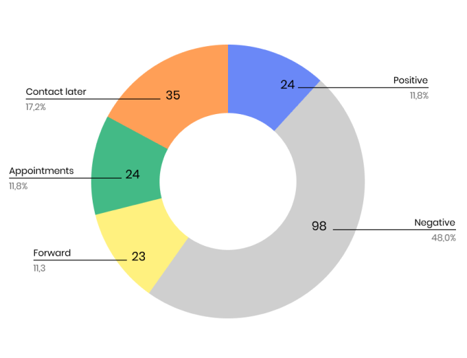

- Industry
- Pharmaceutical
- Headquarters
- Slovenia
- Organization size
- 40
- year 2020
- November 16
Healthy outreach for healthy pipelines: Biosistemika story.
- $500k
- In revenue for 3 month
- 75%
- Increase in sales
- 40%
- New Memberships
- +30 000
- Prospects generated/month

- Jana Erjavec
- CCO at BioSistemika
BioSistemika is a small company, specializing in software development for companies and businesses that work in the BioSciences area. That includes Biotech, Medical Devices, and Pharmaceuticals. Due to its size and specialization, BioSistemika relies on face-to-face meetings and conferences to engage new customers. However, the COVID-19 outbreak made a heavy impact on that lead generation model, raising the need for new channels. In order to do everything right, BioSistemika turned to Slash Studio.
Responsible Team

- Yuriy Boyko
- Account Manager

- Alex Sribnyi
- Head of Client Accounts
Summary:
BioSistemika offers a wide variety of high-quality software development services in the Pharmaceuticals, Biotechnology, and Medical Devices fields. Due to the COVID-19 pandemic, the company invested in email outreach to keep building important connections.
Main takeaway:
A fine-tuned, well-performing sales pipeline, and email outreach campaigns can save your business’ life. Don’t treat cold emails lightly and make sure to be extra careful with your targeting, content writing, and mailbox performance.
Problems:
“Don’t touch it with a bargepole! There are better ways to waste your money, and a hell of a lot better ways to invest it in genuine innovation.”
The reasons that prompted the client to partner with section228 were the following:
- Canceled conferences and F2F meetings. When it comes to such high-value areas as Pharmaceuticals and Biotechnology, potential buyers want to be 100% confident about the services or products they will be using to improve their performance. This is why conferences, meetings, and trade shows used to be the best way for customers and vendors to get acquainted, speak about pain points and solutions, and build relationships. BioSistemika wasn’t an exception and, therefore, got hit hard by bans and restrictions imposed due to the COVID-19 pandemic.
- Lack of experience with cold outreach. The client needed a new sales channel for generating leads, engaging prospects, and converting them into buyers. While cold emails were the most convenient option, the client wasn’t familiar with all the stages of email outreach and needed some assistance from email marketing pros.
What we did
-
- Team:
- 1
-
- Monthly Emails:
- 4,500
-
- Open Rate:
- 50%
- 1. Establishing communication
- Whenever we have to build a cold outreach process from scratch, we have to make sure that it fits the client and the client’s customers. Therefore, our team and BioSistemika’s team went through a detailed onboarding process, during which both teams exchanged their tasks and duties, shared insights on each other's work and business culture, and provided all the information necessary for preparing email campaigns and market research. This step was essential for gathering feedback on our performance, sending reports, and ensuring that the client gains the highest value from our partnership.
Results
-
- Appointments booked:
- 35
-
- New revenue
- $150k
In five months, we helped to generate $150,000 new revenue and to expand the customer’s database via engaging conference participants and igniting their interest in the client’s product and services.
